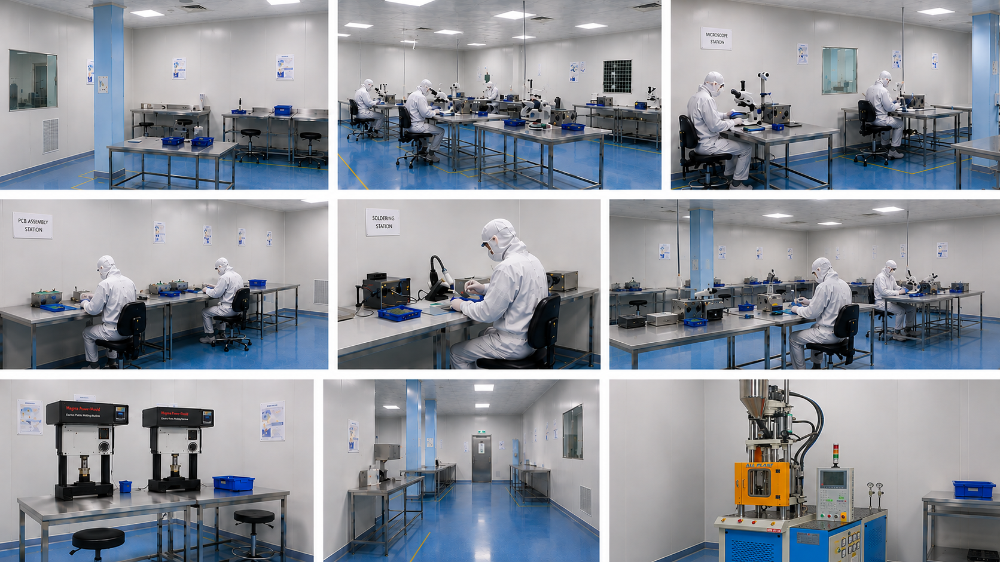

Phase 06 of 06
Production
A validated line running to a fixed process, with every lot traceable and every unit tested. Capacity is 10,000+ units a month, and the process that makes them does not change without a controlled change.
01 · Capacity
Scale without changing hands
Pilot lots, launch volumes and steady-state production all run on the same line in the same building, so scaling up does not mean re-qualifying a new supplier.
{{ c.k }}
{{ c.v }}
02 · Control
The same device, every lot
Consistency comes from fixing the process, not from inspecting harder. Parameters are locked, monitored and only altered through change control with revalidation where it is required.
{{ c.kind }}
{{ c.title }}
- {{ i }}
03 · Supply & support
{{ s.n }}
{{ s.title }}
{{ s.desc }}
End of the process
Bring us the requirement
Six phases, two units, one team. Send the concept or the volume you need and we will come back with a scope and a timeline.